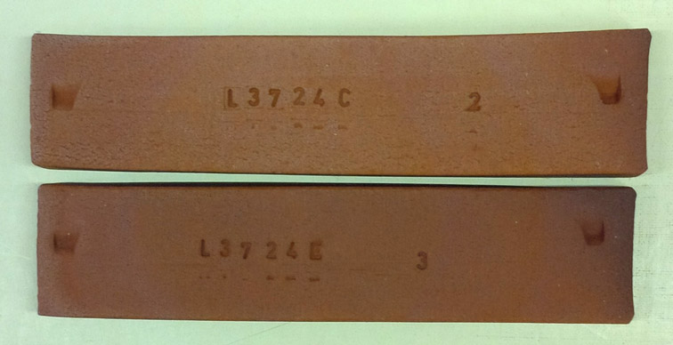
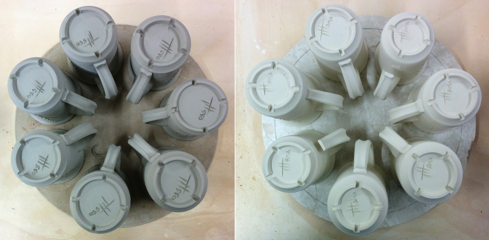
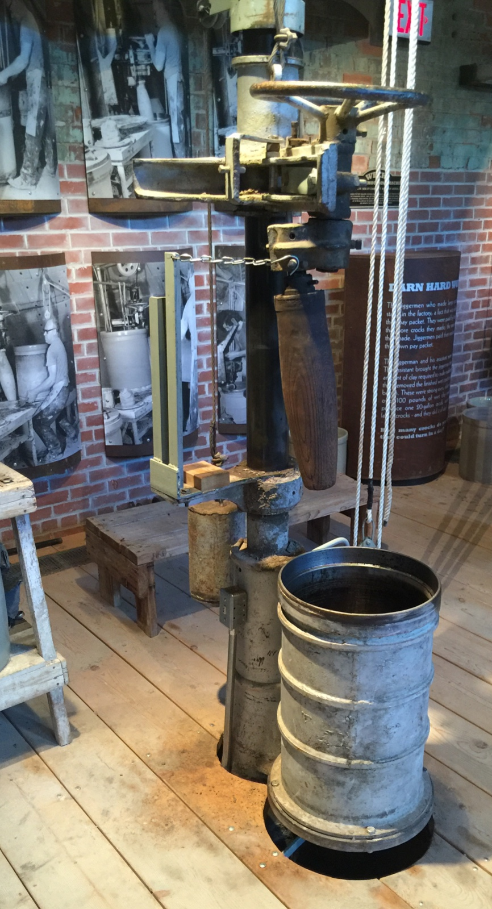
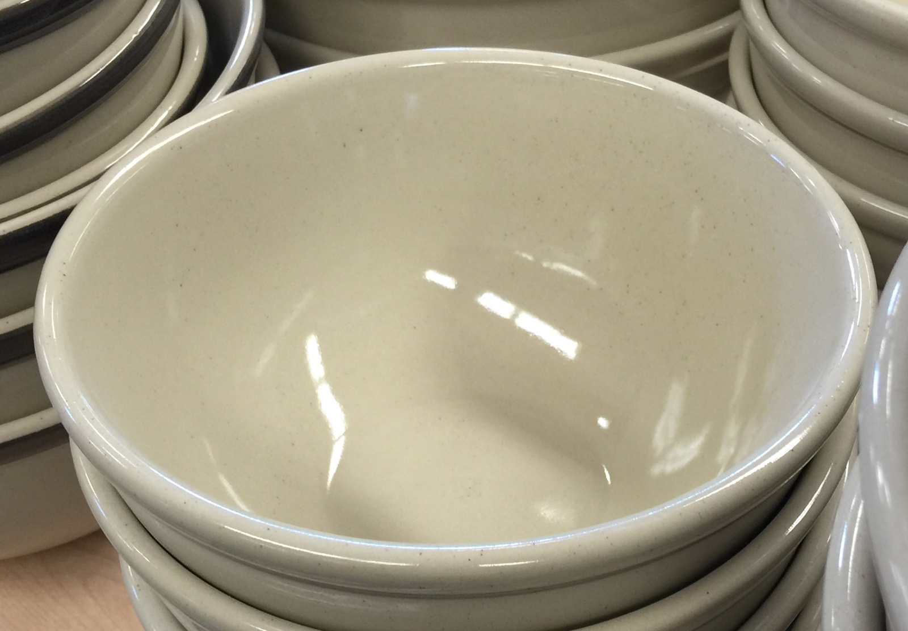
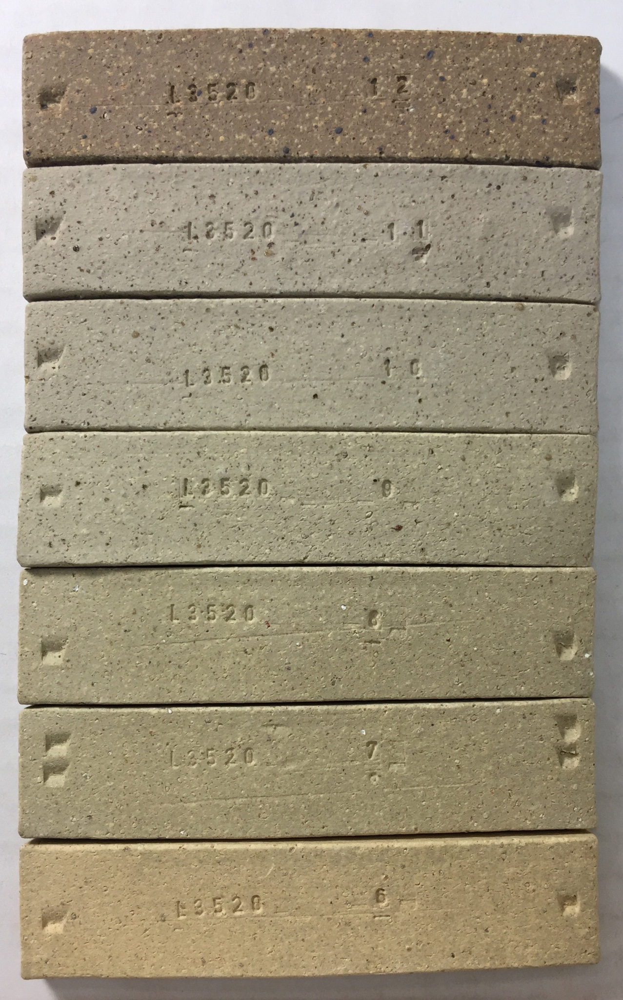
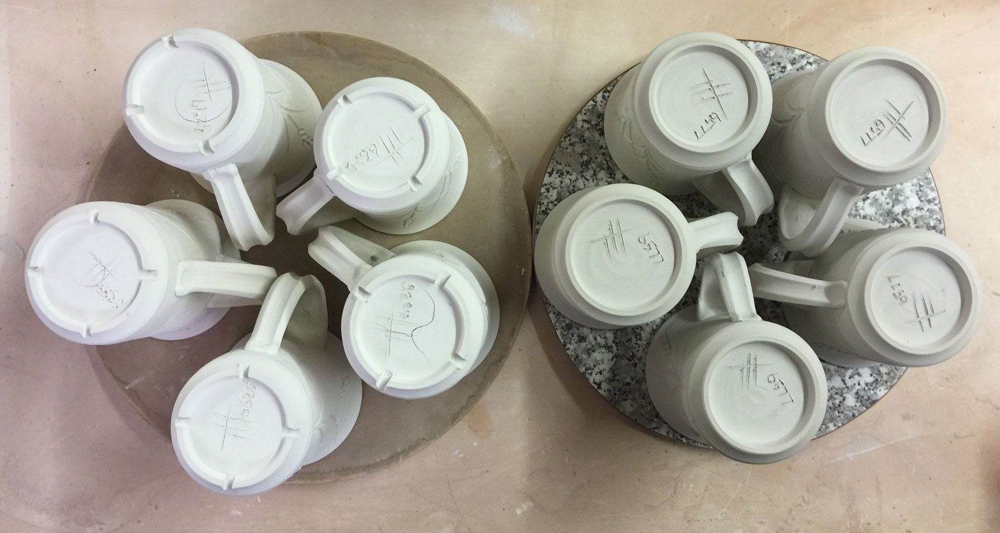
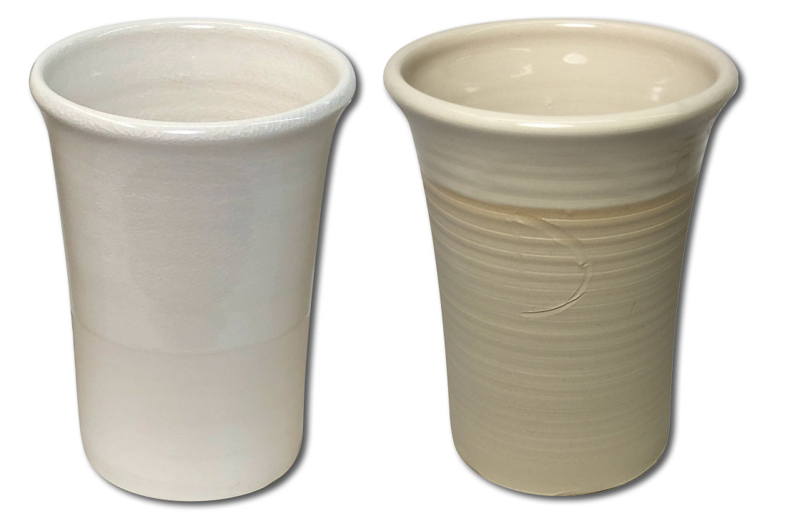

Stoneware
To potters, stonewares are simply high temperature, non-white bodies fired to sufficient density to make functional ware that is strong and durable.
Key phrases linking here: stoneware - Learn more
Details
In traditional ceramics, the term "stoneware" refers to a high-fired (about 1200C+) ceramic clay:feldspar:quartz blend that is semi-vitreous (not translucent and not zero porosity). To appreciate the scope that stoneware can encompass it is helpful to contrast it with porcelains (this description is for people who make stoneware, not users): Stonewares fire darker colors, are less dense (higher porosity), are less vitreous, the fired surface is less homogeneous, the fired shrinkage is less and the fired strength is lower. The working properties of stonewares are more robust, they dry with fewer cracks yet are more plastic, they often have coarser texture (although they can be very slick and smooth), they can be fired more rapidly and are more stable and warp-resistant in the kiln. Stonewares are less expensive, often dramatically so. 'Whiteware' is a subset of stoneware, it fires white like porcelains but is not zero-porosity (thus not highly vitreous).
Stonewares can be glazed to create ware that approaches the strength of porcelains. Stoneware bodies are thus more practical for the vast majority of ware made by industry, potters and hobbyists. Industrial stonewares are typically glazed with opaque and colored glazes, the body is fine particled. Stonewares used by potters and traditional potteries generally employ less refined materials, even fireclays, they can fire brown, grey, buff or off-white. They also commonly have some fired-speckle-producing impurities and some particulate material, such as sand or fine grog, that impart texture.
Stonewares are noted for their excellent working properties, this is because they are ball-clay-based rather than kaolin-based (although they can contain some kaolin). Ball clay levels can be as high as 70% in some super-plastic versions, this is possible because many ball clays are quite vitreous at higher temperatures and they contain significant natural quartz (meaning that only additions of feldspar are needed). Some natural stoneware clays have sufficient levels of plasticity, quartz and feldspar that they can be used as stoneware with no additions (Plainsman Clays mine such materials from the Whitemud Formation in Saskatchewan, Canada).
When stonewares employ more coarsely ground clay materials they often have a minimum safe density. That means that during final stages of firing bloating will begin before zero porosity is attained - this happens because feldspars are densifying the matrix while certain larger particles are still decomposing and generating gases. Fired maturity studies (measuring fired shrinkage and porosity over a range of temperatures) are important to establish a compromise firing temperature that produces adequate strength while having a margin against bloating.
Some believe that a stoneware can be identified by calculations that reveal that it has a particular chemistry profile or ratio of one oxide to another. However this is misguided. Many of the mineral particles in bodies are aggregates that do not interact chemically (either because of size, crystal structure or identity), they exhibit their influence because of physical factors. Others that do decompose, alter or react do so to an extent controlled as much by their size, mineralogy and interactions as by their chemistry. It is better to identify stoneware by the physical fired character.
The quartz particles in stonewares form a skeletal structure that imparts strength during firing. Voids between the particles find feldspars melting and bonding the structure and the crystal transformation of kaolinte to needle-like mullite (porcelains take these processes further). Thus, the formulation of stoneware is mainly about creating a matrix where this will happen while at the same time producing a body that is easy-to-form and dries without problems. Formulating stonewares is about being able to measure their physical properties (plastic, dry and fired) and adjust recipes accordingly (e.g. the DFAC, SHAB, LDW tests). Stoneware bodies need enough quartz so glazes do not craze, enough feldspar so that they develop the desired fired density (1.5% porosity, for example) and enough plasticity for the forming process (but no so much that drying problems arise). Throwing bodies, for example, typically have 5-7% drying shrinkage (any more than than will often mean drying cracks). Plasticity is easily achieved either by selecting more plastic clays or adding bentonite (often as little as 1% can make a difference). When white color is not required, iron-containing clays can be employed (these are often very plastic and less expensive).
Low temperature bodies having strengths that rival high temperature stonewares can be made simply by employing fluxes that melt there. Terra cotta clays, for example, contain natural melters that will quickly densify and mature bodies as low as cone 02. Frits can be added to make stoneware at almost any temperature (if price is no object). If clays are plastic enough, feldspar alone can produce zero-porosity bodies at cone 6 and even lower.
Related Information
Body frit makes Redart a stoneware

This picture has its own page with more detail, click here to see it.
Stoneware at cone 02? Yes. These test bars are fired to cone 02. The top body is 50:50 Redart and a silty raw material from Plainsman Clays (named 3D) plus some bentonite and 1% iron. The bottom one also has 5% Ferro Frit 3110. The porosity: The bottom one is 3%, the top one 8%. So each 1% frit reduces the porosity by 1% in this case.
Stonewares often dry alot better than porcelains

This picture has its own page with more detail, click here to see it.
The mugs on the left are made from a moderate plasticity stoneware clay. On the right: A highly plastic porcelainous whiteware type body. On the left, there is not the slightest hint of a crack anywhere. Right: 3 s-cracks on the bases, 2 handles have separated completely at the bottom and all have small cracks at the join. It is little wonder that stonewares are preferred by potters, they produce much fewer rejects.
A Weeks stoneware crock rolling machine

This picture has its own page with more detail, click here to see it.
These were used in the early 1900s to make crocks up to 60 gallon size in the Medalta Potteries factory in Medicine Hat, Alberta, Canada. The metal barrel was fitted with a wooden base, then lined with paper. Then the clay was rolled up the side and surface finished. The barrel was then dropped down into the false floor and the crock removed.
Surface treatment affects glaze speck development in jiggered stoneware

This picture has its own page with more detail, click here to see it.
Notice the inside of this large transparent glazed cone 6 stoneware bowl. There is a concentration of specks on one part because that area was sponged at the leather hard and dry stages to smooth surface problems that happened during the jiggering process. These specks are normally driven below the surface during forming.
Is Lincoln 60 really a fireclay? Simple physical testing says...

This picture has its own page with more detail, click here to see it.
Materials are not always what their name suggests. These are Lincoln #60 Fireclay test bars fired at cone 10 reduction (top) and from cone 11 down to 6 oxidation (top to bottom). This clay already has stoneware density at cone 7 (3% porosity as indicated by our SHAB test). It vitrifies progressively from there upward (less than 3% porosity at cone 7 to near zero% by cone 9 oxidation. Maximum firing shrinkage happens at cone 8 and by cone 10 it is expanding (indicating decomposition has started) and it is bloating by cone 11 (melting is sealing the escape of gases of decomposition). Is Lincoln #60 a really fireclay? Absolutely not! But at cone 6 it is a credible plastic stoneware, all by itself!
One reason why stoneware clays are more convenient

This picture has its own page with more detail, click here to see it.
Fewer drying cracks! These were all made at the same time and dried in the same way. Left: Three out of five porcelain mugs have cracked on the bottoms! Right: None of the stoneware ones have. Sometimes I feel as if those are "crying cracks" instead of "drying cracks". Of course, I could have been more careful with the porcelain. But I keep forgetting items on the "drying success checklist"! So, for production, it makes sense to use a stoneware if at all possible. I can make hundreds of mugs using the body on right, M340, and will not lose a single one!
Vitreous cone 6 stoneware. How?

This picture has its own page with more detail, click here to see it.
Producing a zero-porosity cone 6 stoneware is not as easy as you might think. People expect stonewares to be plastic and fit glazes well. That means there needs to be lots of ball clay and silica in the recipe. These are refractory materials and they don't leave much room for the material that produces the vitrification: Feldspar. If the body does not need to be white there is another interesting approach: Use a red terra cotta material to supply plasticity and maturity. In this case I have made a 50:50 mix of a red-burning, super plastic, low fire clay (Plainsman BGP) with a refractory white-burning ball clay (Plainsman 3C). The result vitrifies to a zero-porosity, beautiful light tan body that even glistens in the light. One problem: Fired shrinkage. This body shrinks almost 17% from wet to fired.
A Super Plastic Stoneware Made With Two Materials
This mix showcases stoneware's advantages over porcelain

This picture has its own page with more detail, click here to see it.
Left: 65% #6Tile kaolin and 35% nepheline syenite. Although it has great plasticity and fires white, it crazes the glaze and has 1% fired porosity (using the SHAB test).
Right: 65% M23 Old Hickory ball clay (similar to OM#4) and 35% nepheline syenite (feldspar would also work). The glaze fits, the body fires very dense (zero porosity) and plasticity is fantastic!
The body on the left needs a 20% silica addition (to stop the crazing) and more nepheline (to reduce porosity to porcelain levels). The remaining 40% kaolin will not be nearly enough for a workable plasticity (so bentonite will be needed). The body on the right does not need fixing; it works as is. Many feel that stoneware body recipes must be built on a feldspar-containing base clay having pottery plasticity (adding ball clay, kaolin, feldspar and silica and ending up with needlessly complicated recipes). But, ball clay is a base, all it needs is a non-plastic filler (to cut plasticity and therefore drying shrinkage) and a flux to vitrify it - feldspar or nepheline fills both roles.
Of course, this stoneware does not fire as white. But do you need white? Glazes will fire brightly colored on this surface. And, cleaner ball clays are available in many areas (even ball clays intended for casting will be plastic enough). It is also worth considering the use of a white engobe.
Links
| Typecodes |
Stoneware Clay
These materials generally contain bentonite, ball clay, kaolin, feldspar, mica, quartz and some iron impurities. They can often be used as a body with few additives. |
| Glossary |
Bone China
A ceramic whose priorities are translucency, whiteness, fired strength and resistance to thermal shock failure. |
| Glossary |
High Temperature Glaze
|
| Glossary |
Earthenware
What is the difference between earthenware and a regular stoneware body? Earthenwares lack the glass development to fill voids and glue particles. |
| Glossary |
Secondary Clay
Clays form by the weathering of rock deposits over long periods. Primary clays are found near the site of alteration. Secondary clays are transported by water and laid down in layers. |
| Glossary |
Vitrification
A process that happens in a kiln, the heat and atmosphere mature and develop the clay body until it reaches a density sufficient to impart the level of strength and durability required for the intended purpose. Most often this state is reached near zero p |
| Glossary |
Porcelain
How do you make porcelain? There is a surprisingly simple logic to formulating them and to adjusting their working, drying, glazing and firing properties for different purposes. |
| Glossary |
Clay Body Porosity
In ceramics, porosity is considered an indication of density, and therefore strength and durability. Porosity is measured by the weight increase when boiled in water. |
| Glossary |
Vitreous
The fired state of a ceramic when sufficient heat in the kiln has produced the density and strength common, and expected, in stonewares and porcelains. |
| Materials |
Ball Clay
A fine particled highly plastic secondary clay used mainly to impart plasticity to clay and porcelain bodies and to suspend glaze, slips and engobe slurries. |
| Articles |
Stoneware Casting Body Recipes
Some starting recipes for stoneware and porcelain with information on how to adjust and adapt them |
| Articles |
Crazing in Stoneware Glazes: Treating the Causes, Not the Symptoms
Band-aid solutions to crazing are often recommended by authors, but these do not get at the root cause of the problem, a thermal expansion mismatch between glaze and body. |
| Tests |
Shrinkage/Absorption Test
SHAB Shrinkage and absorption test procedure for plastic clay bodies and materials |
 PayPal | No tracking, No ads, No paywall, No transient content! Just organized, concise information constantly updated and improved. Was this helpful? Consider supporting me. |
| By Tony Hansen Follow me on        |  |
Got a Question?
Buy me a coffee and we can talk 

https://digitalfire.com, All Rights Reserved
Privacy Policy